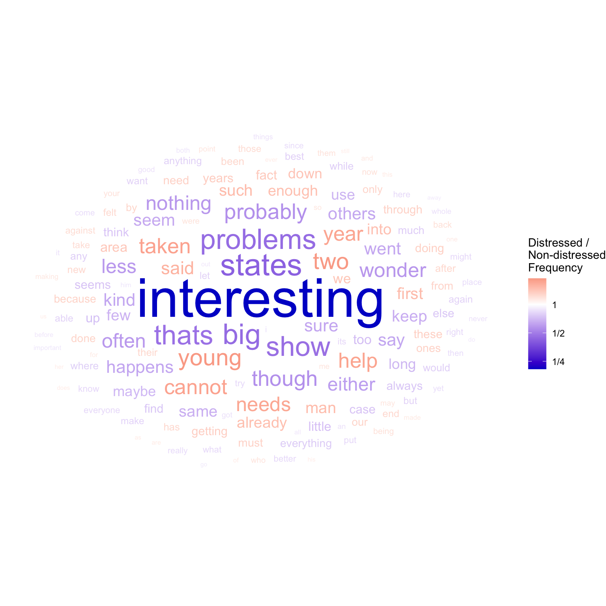
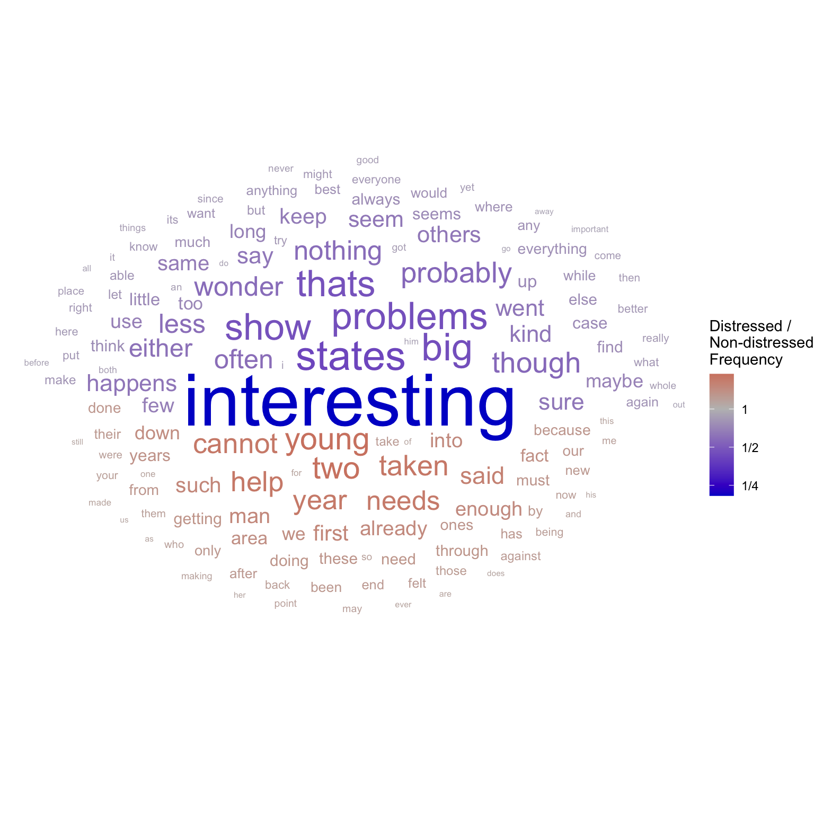
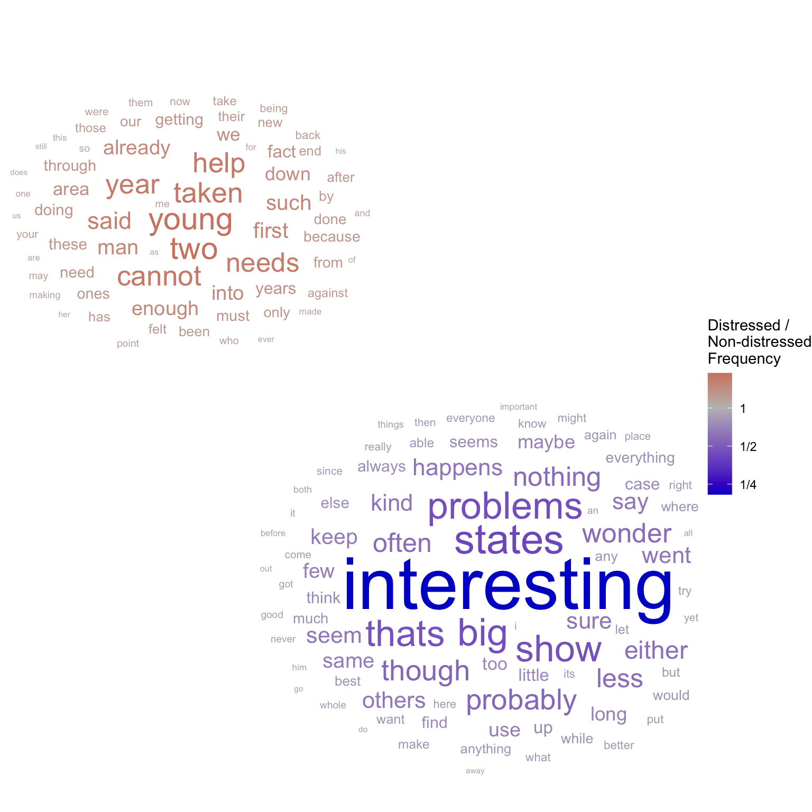
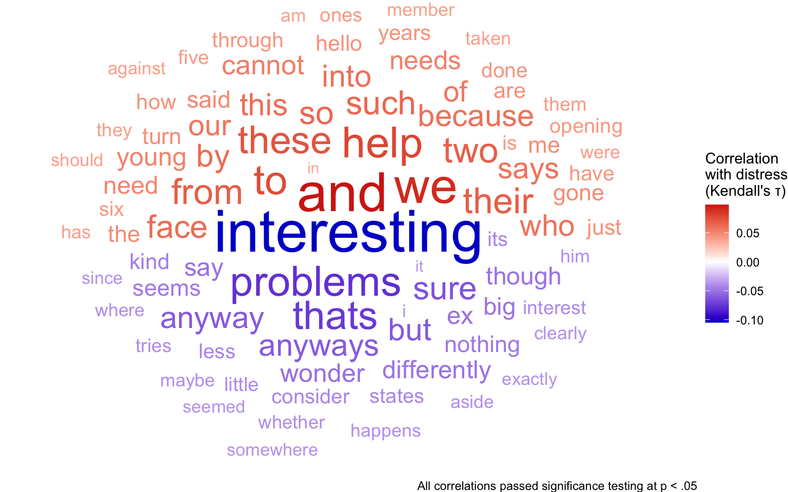

distressed_texts <- read_csv("https://raw.githubusercontent.com/wwbp/empathic_reactions/master/data/responses/data/messages.csv", show_col_types = FALSE) %>%
select(essay, distress, distress_bin)
head(distressed_texts)
#> # A tibble: 6 × 3
#> essay distress distress_bin
#> <chr> <dbl> <dbl>
#> 1 it is really diheartening to read about these immigrant… 4.38 1
#> 2 the phone lines from the suicide prevention line surged… 4.88 1
#> 3 no matter what your heritage, you should be able to ser… 3.5 0
#> 4 it is frightening to learn about all these shark attack… 5.25 1
#> 5 the eldest generation of russians aren't being treated … 4.62 1
#> 6 middle east is fucked up, I've honestly never heard of … 3.12 03 A Special Tutorial on Word Clouds
Word clouds are commonly used for purposes like:
- Summarizing text using word frequencies
- Decorating placemats at cheap restaurants
- Comparing word usage in two groups of texts
- Correlating word usage with a construct of interest
Word clouds are not a good tool for summarizing text. They are a perfectly fine tool for kitschy placemats, but those are beyond the scope of this textbook. In the world of data science, there are only two legitimate uses for word clouds: comparing words across two groups of texts, and correlating word frequencies with a construct of interest. Even these legitimate uses break a fundamental rule of data visualization, since by showing many words at the same time they are telling many stories at the same time, each distracting from the others. Nevertheless, analyses often include so many words (or other units of text) that producing a visualization for each one is unfeasible, and a summary graphic is necessary.
Because word clouds as data visualization can be so foreign to those not familiar with natural language processing, we offer an brief tutorial on creating them in R, using the ggwordcloud package.
In this tutorial, we will visualize data from Buechel et al. (2018) (see Section 2.2.1 and Section 2.2.4), in which participants rated their distress after reading various news stories, and described their thoughts in their own words. The distress ratings were then binned into two groups, allowing us to compare the content of “distressed” texts to that of “non-distressed” texts.
3.1 Word Clouds for Comparing Two Groups
After some preprocessing, we begin with a dataframe in which each word has a row, with three variables:
distressed_countis the number of times the word appears in texts by distressed authors.nondistressed_countis the number of times the word appears in texts by non-distressed authors.distressed_freq_ratiois equal todistressed_count/nondistressed_count, or “How many times more common is this word in distressed texts than in non-distressed ones?”
The dataset has been filtered to only include “stop words” (covered in Chapter 14), words that we wouldn’t expect to be associated with the topic of the text.
head(distressed_texts_binary)
#> # A tibble: 6 × 4
#> word distressed_count nondistressed_count distressed_freq_ratio
#> <chr> <int> <int> <dbl>
#> 1 the 3297 2985 1.10
#> 2 to 2556 2415 1.06
#> 3 and 2125 1856 1.14
#> 4 of 1592 1416 1.12
#> 5 i 1587 1874 0.847
#> 6 a 1547 1603 0.965Word clouds generally have three aesthetics: label, color, and size:
labelwill always be the text of the words.coloris appropriate for representing relative frequency, since it has a neutral center (where the frequencies in both groups are the same anddistressed_freq_ratio= 1. Such a neutral center calls for a diverging color scale (Section 2.2.3). Because we are representing the ratio of two frequencies, it is appropriate to use a log scale (see Section 2.2.1). This will make the scale symmetrical for values above and below the neutral center.sizeis technically unnecessary, since the diverging color scale already represents both the valence and the magnitude of the relative frequency. In practice though, we are generally most interested in the largest differences. Size is therefore used to emphasize words with greater a discrepancy between the groups. This magnitude value is calculated asabs(log2(distressed_freq_ratio)).
distressed_texts_binary <- distressed_texts_binary %>%
mutate(freq_ratio_log_magnitude = abs(log2(distressed_freq_ratio)))
head(distressed_texts_binary)
#> # A tibble: 6 × 5
#> word distressed_count nondistressed_count distressed_freq_ratio
#> <chr> <int> <int> <dbl>
#> 1 the 3297 2985 1.10
#> 2 to 2556 2415 1.06
#> 3 and 2125 1856 1.14
#> 4 of 1592 1416 1.12
#> 5 i 1587 1874 0.847
#> 6 a 1547 1603 0.965
#> # ℹ 1 more variable: freq_ratio_log_magnitude <dbl>library(ggwordcloud)
set.seed(2)
distressed_texts_binary %>%
# top 100 highest discrepancy words
arrange(desc(freq_ratio_log_magnitude)) %>%
slice_head(n = 150) %>%
# plot
ggplot(aes(label = word,
size = freq_ratio_log_magnitude,
color = distressed_freq_ratio)) +
geom_text_wordcloud(show.legend = TRUE) + # wordcloud geom
scale_radius(range = c(2, 18), guide = "none") + # control text size
scale_color_gradient2(
name = "Distressed /\nNon-distressed\nFrequency",
labels = ~ MASS::fractions(.x), # show legend labels as fractions
low = "blue3", mid = "white", high = "red3", # set diverging color scale
trans = "log2" # log scale
) +
theme_void() # blank background
We can now easily see that the word most representative of non-distressed texts is “interesting”, which is far more representative of one group than any other word in the analysis.
The angle_group aesthetic can be used to separate out the words more frequent in distressed texts from those more frequent in non-distressed texts:
set.seed(2)
distressed_texts_binary %>%
# top 100 highest discrepancy words
arrange(desc(freq_ratio_log_magnitude)) %>%
slice_head(n = 150) %>%
# plot
ggplot(aes(label = word,
size = freq_ratio_log_magnitude,
color = distressed_freq_ratio,
angle_group = distressed_freq_ratio > 1)) +
geom_text_wordcloud(show.legend = TRUE) + # wordcloud geom
scale_radius(range = c(2, 18), guide = "none") + # control text size
scale_color_gradient2(
name = "Distressed /\nNon-distressed\nFrequency",
labels = ~ MASS::fractions(.x), # show legend labels as fractions
low = "blue3", mid = "grey", high = "red3", # set diverging color scale
trans = "log2" # log scale
) +
theme_void() # blank background
Alternatively, we can specify an original position for each label (as x and y aesthetics) to create multiple clouds:
set.seed(2)
distressed_texts_binary %>%
# top 100 highest discrepancy words
arrange(desc(freq_ratio_log_magnitude)) %>%
slice_head(n = 150) %>%
# plot
ggplot(aes(label = word,
size = freq_ratio_log_magnitude,
color = distressed_freq_ratio,
x = distressed_freq_ratio < 1,
y = distressed_freq_ratio > 1)) +
geom_text_wordcloud(show.legend = TRUE) + # wordcloud geom
scale_radius(range = c(2, 18), guide = "none") + # control text size
scale_color_gradient2(
name = "Distressed /\nNon-distressed\nFrequency",
labels = ~ MASS::fractions(.x), # show legend labels as fractions
low = "blue3", mid = "grey", high = "red3", # set diverging color scale
trans = "log2" # log scale
) +
theme_void() # blank background
3.2 Word Clouds for Continuous Variables of Interest
Recently, some have advocated using correlation coefficients instead of frequency ratios in word clouds. This approach has three advantages:
- Correlation coefficients take variance into account.
- Since correlation coefficients are more commonly used, it is easier to perform significance testing on them. This way we can include only significant results in the visualization.
- Unlike frequency ratios, which always compare two groups, correlation coefficients can be applied to continuous variables of interest.
To apply this method to the data from Buechel et al. (2018), we can use participants’ continuous distress ratings for each text. We count the occurrences of each word in each text, and measure the correlation between these frequency variables and the corresponding distress ratings. Since the association may be non-linear, we use the Kendall rank correlation. You can see the full calculations by pressing the “View Source” button at the bottom of this page.
We can now map the strength of the correlation (i.e. abs(cor)) to size, and use color to show the direction of the correlation.
distress_cor <- read_csv("data/distress_cor.csv", show_col_types = FALSE)
head(distress_cor)
#> # A tibble: 6 × 2
#> word cor
#> <chr> <dbl>
#> 1 and 0.0983
#> 2 from 0.0680
#> 3 how 0.0448
#> 4 is 0.0422
#> 5 it -0.0354
#> 6 me 0.0473
set.seed(2)
distress_cor %>%
arrange(desc(abs(cor))) %>%
ggplot(aes(label = word,
color = cor,
size = abs(cor),
angle_group = cor < 0)) +
geom_text_wordcloud(eccentricity = 1.2, show.legend = TRUE) +
scale_radius(range = c(4, 15), guide = "none") +
labs(caption = "All correlations passed significance testing at p < .05") +
scale_color_gradient2(
name = "Correlation\nwith distress\n(Kendall's τ)",
low = "blue3", mid = "white", high = "red3", # set diverging color scale
) +
theme_void()
“Interesting” is still the most highly correlated word, indicating lack of distress, but now we can see that “and” and “we” are highly indicative of distress. The assurance that all correlations passed significance testing makes for a particularly convincing graphic.
3.3 Advanced Word Clouds
For more information about how word clouds are generated and how to customize them, see Pennec (2023). Be careful though - any customization of your word clouds should be in the service of communicating information effectively.
Buechel, S., Buffone, A., Slaff, B., Ungar, L. H., & Sedoc, J. (2018). Modeling empathy and distress in reaction to news stories. CoRR, abs/1808.10399. http://arxiv.org/abs/1808.10399
Pennec, E. le. (2023). Ggwordcloud: A word cloud geom for ggplot2. In lepennec.github.io/ggwordcloud/. https://lepennec.github.io/ggwordcloud/articles/ggwordcloud.html